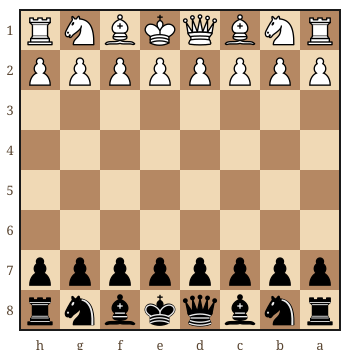
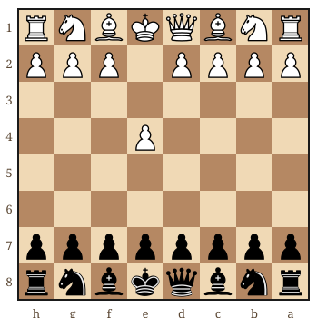
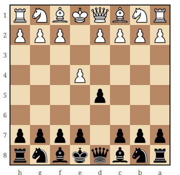
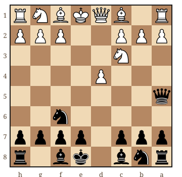
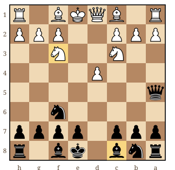
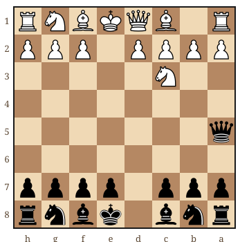
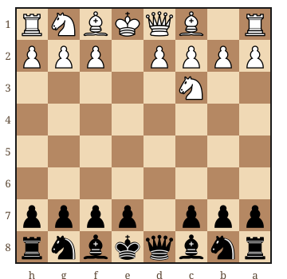
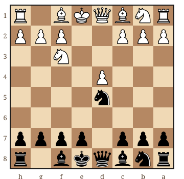
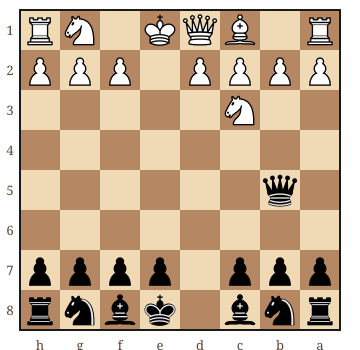
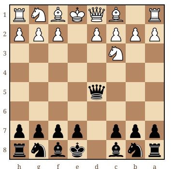

La défense scandinave commence par 1. e4 d5. Les Noirs attaquent immédiatement le pion e4. Après 2. exd5, ils peuvent reprendre par …Dxd5 ou préparer une reprise autrement avec …Cf6. Dans le chemin avec la dame, il faut prévoir les coups qui vont l’attaquer.
- Avec les Noirs
- 1. e4 d5
- Repère ECO : B01
La Scandinave pose une question que l’on rencontre partout aux échecs : une capture utile peut-elle coûter du temps ? En reprenant avec la dame, les Noirs récupèrent un pion, mais les Blancs peuvent développer leur cavalier avec une menace.
Elle peut vous intéresser si vous aimez clarifier le centre rapidement. Pour la découvrir, comprenez le trajet de la dame et le développement plutôt que de rechercher un piège.
À retenir avant de jouer
- Votre objectif
- Contester e4 dès le premier coup et terminer le développement après la reprise du pion.
- La décision au centre
- Choisir entre la reprise immédiate de dame et le développement …Cf6 avant de reprendre.
- Le point de vigilance
- Une case de dame doit être contrôlée aussi pour les clouages possibles, pas seulement les attaques directes.
Sommaire : choisir une partie du guide
Sur l’échiquier
Les premiers coups, un à un
Dans la notation française, C = cavalier, F = fou, D = dame et O-O = petit roque. T = tour et R = roi. Le signe x indique une capture, + un échec et # un mat. Les points de suspension indiquent un coup des Noirs.



Ce que chaque coup accomplit
- 1. e4
Les Blancs occupent e4 et ouvrent des lignes pour leurs pièces.
- 1…d5
Le pion d5 attaque immédiatement e4. Les Blancs peuvent capturer ce pion avec exd5.
Votre fil conducteur
Trois idées à garder en tête
Comprendre ce que la capture libère
Après exd5, le pion noir d a disparu et la colonne d se transforme. La reprise par la dame utilise la colonne qui part de d8.
Prévoir l’attaque de développement
Après …Dxd5, Cc3 sort une pièce blanche en attaquant la dame. Prévoir une retraite évite de découvrir cette menace trop tard.
Ne pas déplacer la dame sans nécessité
Une fois la dame à l’abri, développez les cavaliers et les fous. Chaque trajet supplémentaire doit répondre à une vraie raison.
Un exemple court pour comprendre le plan

Dans cette illustration, la dame reprend en d5 puis recule en a5 après Cc3. Les Blancs ont développé leur cavalier avec une menace ; les Noirs commencent ensuite à développer le leur en f6. …Da5 est une possibilité, pas l’unique retraite de la dame.
Deux choix des Blancs à reconnaître
2. exd5 : Capturer le pion avancé
C’est le chemin illustré ici. La question noire devient le choix de la reprise et le développement qui la suivra.
3. Cc3 après …Dxd5 : Développer en attaquant
Le cavalier blanc attaque la dame d5. Les Noirs doivent vérifier ses cases de retraite et les menaces sur la position.
Ce sont des repères pour vous orienter. Vous n’avez pas besoin de mémoriser leurs ramifications pour commencer à jouer.
Comprendre ce qui se joue
Lire le centre et la structure de pions
Après e4, …d5 et exd5, les Noirs ont fait disparaître le pion central blanc e. La reprise …Dxd5 récupère le pion blanc qui se trouve en d5, mais met la dame sur une case accessible au cavalier b1. Le coup Cc3 développe ainsi une pièce blanche tout en attaquant une pièce de valeur supérieure. C’est le sens concret d’un « développement avec gain de temps ».
La retraite de dame n’est pas une catastrophe en elle-même : les Noirs peuvent construire une position cohérente après …Da5. Mais ils ont déjà consacré plusieurs coups à une seule pièce tandis que les Blancs ont sorti un cavalier. Il faut ensuite donner un rôle aux autres pièces. Rechercher de nouveaux échecs de dame uniquement parce qu’ils sont disponibles peut prolonger ce retard.
Le départ du pion d ouvre le passage du fou c8 par d7. Tant que le pion e n’a pas avancé en e6, une sortie vers g4 peut être disponible. Le fou peut alors viser le cavalier f3, situé sur la diagonale de la dame d1. Ce n’est pas un clouage absolu au roi : le cavalier peut légalement bouger, mais il faut regarder ce que ce mouvement exposerait derrière lui.
Quelles cases chercher pour vos pièces ?
Ces placements sont des repères à vérifier dans la position, pas des coups à jouer sans regarder l’adversaire.
- Dame d8d5 pour reprendre, puis une retraite préparée
- Après Cc3, vérifiez les cases attaquées et la sécurité de la nouvelle case. Le déplacement ne doit pas devenir votre seul plan.
- Cavalier g8f6 dans l’exemple étudié
- Il contrôle des cases centrales et commence à réduire le retard de développement.
- Fou c8g4 si la diagonale est libre et utile
- Depuis g4, il peut exercer une pression sur Cf3 et la dame derrière. Vérifiez les pions qui peuvent l’attaquer.
- Cavalier b8une sortie compatible avec les pions choisis
- Une organisation ultérieure par …c6 peut réserver c6 au pion et demander une autre route au cavalier.
- Fou f8 et roipréparer le roque par un développement coordonné
- Le roi doit être protégé avant que les colonnes centrales ne deviennent dangereuses. Déplacez aussi le fou, pas seulement la dame.
Comment réagir aux idées adverses
Si les Blancs développent Cc3 contre la dame
C’est une menace réelle sur d5. Choisissez une retraite en tenant compte des pions et des pièces, puis reprenez le développement. Le fait de connaître …Da5 ne dispense pas de vérifier que le trajet et la case d’arrivée sont sûrs dans la position jouée.
Si les Blancs installent d4
Ils gagnent un point d’appui central et libèrent le fou c1. Votre priorité est de sortir vos pièces et d’examiner ce centre. Des coups de pion comme …c6 et …e6 peuvent participer à une construction, mais il faut comprendre ce qu’ils ferment ou rendent disponible.
Si vous pouvez développer le fou avec une menace
Un coup tel que …Fg4 peut sortir une pièce tout en mettant une pression sur Cf3. Regardez la pièce derrière le cavalier : si c’est la dame, le déplacement du cavalier peut avoir un coût matériel, sans être illégal. Distinguer clouage relatif et clouage au roi évite de fausses conclusions.
Une décision concrète
Après la retraite de dame, développer une autre pièce
La dame noire est déjà en a5. Les Blancs ont occupé d4 et développé Cf3. Les Noirs peuvent maintenant chercher une sortie utile pour leur fou c8, dont la diagonale a été libérée par le départ du pion d.

Quel développement de fou peut mettre une pression sur le cavalier f3 et la dame derrière lui ?
Repérez d’abord les menaces et les cases contrôlées, puis proposez une réponse.
Lire l’analyse de la position
5…Fg4 sort le fou c8 par d7, e6 et f5, puis vise le cavalier f3. Derrière ce cavalier, la diagonale continue par e2 vers la dame d1. Le cavalier n’est pas cloué au roi : il peut légalement se déplacer, mais doit tenir compte de la dame exposée. Le coup illustre un développement avec une idée, pas une pièce gagnée de force.
Comparer pour comprendre
Da5 ou Dd8 : distinguer activité de dame et menace réelle
Après …Dxd5 et Cc3, la dame noire doit tenir compte de l’attaque du cavalier. Plusieurs retraites sont possibles. Le choix ne se résume pas à « une case active est forcément meilleure » ou « revenir en arrière est forcément mauvais ». Il faut observer la sécurité de la dame et le développement restant.
Dans les deux branches, le matériel reste équilibré et les Blancs ont développé un cavalier en gagnant un temps sur la dame. Les Noirs devront ensuite sortir les autres pièces. L’atelier apprend aussi à ne pas annoncer un échec quand une pièce bloque la diagonale.
Position commune de départ :
1. e4 d5 2. exd5 Dxd5 3. Cc3
Rejouez cette position, puis comparez les suites ci-dessous. Ce sont des exemples commentés : elles ne constituent pas deux recommandations équivalentes ni des coups à reproduire sans calculer.
…Da5 : une diagonale dont il faut voir l’obstacle
3… Da5

3…Da5 place la dame sur une case active de l’aile dame. On pourrait croire qu’elle donne échec au roi e1 par la diagonale a5–b4–c3–d2–e1. Ce n’est pas le cas : le cavalier blanc c3 interrompt cette diagonale. Le coup n’est donc pas un échec dans cette position.
Cela peut devenir un motif de pression si la position change. Mais un potentiel futur n’est pas une menace déjà réalisée. Continuez à compter les obstacles après chaque déplacement du cavalier ou d’un pion, sans attribuer à la dame des attaques qu’elle ne possède pas encore.
…Dd8 : revenir à l’abri sans récupérer le temps dépensé
3… Dd8

3…Dd8 replace la dame sur sa case de départ. Elle n’est plus directement attaquée par le cavalier c3, mais les coups consacrés à sa sortie et à son retour ont bien été joués. Les Blancs ont une pièce développée, tandis que les Noirs doivent commencer le développement des leurs.
Cette observation de rythme ne constitue pas une démonstration de défaite. Il faut encore jouer la position. Le bon réflexe noir consiste à chercher des coups de pièces utiles et une organisation centrale, plutôt qu’à vouloir justifier immédiatement la retraite par une nouvelle sortie de dame.
Vérifiez votre compréhension
…Da5 donne-t-il échec dans la position affichée ?
Non. Le cavalier c3 bloque la diagonale vers e1. La présence du roi au bout d’une ligne ne suffit pas si un obstacle la coupe.
Le retour en d8 rend-il aux Noirs les coups qu’ils ont dépensés ?
Non. Les coups de dame ont consommé du temps. L’état du développement doit être évalué dans la position actuelle.
Le matériel suffit-il à comparer ces deux retraites ?
Non. Il est équilibré dans les deux cas. La sécurité de la dame, l’activité des pièces et le temps nécessaire au roque comptent aussi.
À appliquer dans vos parties : Pour chaque sortie de dame, tracez ses lignes jusqu’au premier obstacle. Pour chaque retraite, comparez ensuite le nombre de pièces actives des deux camps. Vous éviterez de confondre une dame visible avec une attaque déjà dangereuse.
Reconnaître les embranchements
Deux variantes à comprendre pour commencer
Ces lignes courtes montrent ce qui change dans le centre et le développement. Rejouez les coups, puis formulez le plan avec vos propres mots ; les réponses adverses peuvent vous amener à une autre position.
La reprise de dame et le recul en a5
1. e4 d5 2. exd5 Dxd5 3. Cc3 Da5 4. d4 Cf6
Les Blancs attaquent la dame par Cc3, puis occupent d4. La dame a5 reste active sur la diagonale vers e1, mais le cavalier c3 s’y interpose : la dame ne donne pas échec dans cette position.
Le plan à comprendre : Les Noirs peuvent développer leur fou c8 avant …e6. Vérifiez cependant les attaques possibles sur la dame : une dame active devient un problème si elle oblige à perdre plusieurs temps pendant que les pièces adverses sortent.
…Cf6 : différer la reprise du pion
1. e4 d5 2. exd5 Cf6 3. d4 Cxd5 4. Cf3

Les Noirs développent le cavalier g8 au lieu de reprendre tout de suite avec la dame. Dans cette suite, ils récupèrent d5 au coup suivant ; les Blancs ont installé d4 et développé un cavalier.
Le plan à comprendre : Les deux camps ont retrouvé l’égalité matérielle, avec des pièces différentes sur les cases centrales. Les Noirs doivent surveiller les coups qui gagnent un temps sur Cd5. Cette branche ne garantit pas la reprise dans tous les ordres de coups : les Blancs peuvent aussi chercher à conserver leur pion.
Calculer avant de jouer
Piège et vigilance : Prendre un fou protégé avec sa dame

1. e4 d5 2. exd5 Dxd5 3. Cc3 Dc6 4. Fb5 Dxb5
Avant de lire la suite, repérez les échecs, les captures et les pièces attaquées.
Voir la suite et le mécanisme
5. Cxb5
Le fou blanc b5 était protégé par le cavalier c3. En prenant ce fou, la dame noire arrive sur une case où Cxb5 la capture. Au bilan de cette opération, les Noirs ont donné leur dame pour un fou : une perte matérielle nette de six points avec les valeurs habituelles.
Comment éviter le problème ou y répondre
Le problème commence avec 3…Dc6 : après Fb5, la dame est clouée sur la diagonale b5–c6–d7–e8 et ne peut pas simplement s’enfuir en d6. Jouer 3…Da5 évite ce piège précis. Avant de choisir une case pour la dame, regardez aussi les lignes qui la relient à votre roi : une attaque de fou peut devenir un clouage décisif.
Suite de référence à rejouer depuis le début :
1. e4 d5 2. exd5 Dxd5 3. Cc3 Da5
Passer de l’ouverture au milieu de partie
Une fois la dame stabilisée et les pièces légères sorties, la question devient celle du centre blanc et des colonnes disponibles. Où le roi peut-il se mettre en sécurité ? Quelle pièce noire reste inactive ? Les déplacements de dame n’expliquent plus toute la position : votre plan doit maintenant impliquer les autres pièces.
En analysant une partie, comptez les coups de dame joués avant la sortie du second cavalier et des deux fous. Cherchez ensuite lesquels répondaient à une menace réelle et lesquels étaient seulement des tentatives d’échec sans suite.
Le nom et ses origines
D’où vient le nom « défense scandinave » ?
Le nom actuel est associé au travail des joueurs scandinaves qui ont étudié et popularisé la défense, notamment les frères Collijn à la fin du XIXe siècle. Leur pratique au championnat nordique de Stockholm de 1897 fait partie de cette histoire.
Les coups sont beaucoup plus anciens que ce nom : une partie conservée dans le poème valencien Scachs d’amor, vers 1475, commence déjà par e4 et …d5. Il faut distinguer ce témoignage ancien de la diffusion scandinave ultérieure.
Le poème valencien ne prouve pas une invention de l’ouverture en Scandinavie. Le nom reflète une étape de sa popularisation ; on rencontre aussi l’appellation anglaise Center Counter.
Les erreurs à éviter dans cette ouverture
Oublier que le cavalier attaque d5
Cc3 gagne un temps sur la dame. Repérer les cases contrôlées par un cavalier évite de perdre une dame dès l’ouverture.
Jouer plusieurs coups de dame sans développer
La reprise en d5 ne doit pas devenir une promenade. Sortez vos autres pièces dès que la position le permet.
Croire que toute sortie précoce de dame est interdite
Il s’agit d’une décision concrète avec des conséquences de développement. Le bon apprentissage consiste à comprendre ces conséquences, pas à remplacer le calcul par une interdiction absolue.
À vous de jouer
Un exercice pour vérifier l’idée

Quelle retraite place la dame sur la colonne a, hors de l’attaque du cavalier c3 ?
Prenez quelques secondes pour choisir et expliquer votre coup.
Voir la réponse expliquée
3…Da5 est une retraite possible : la dame quitte d5 et parcourt c5 et b5, libres, jusqu’à a5. Le cavalier c3 n’attaque pas cette case. Ce n’est pas la seule retraite légale ; l’exercice montre un choix classique de placement.
Votre prochaine séance de pratique
- Après …Dxd5, tracez toutes les cases attaquées par le cavalier qui arrive en c3.
- Rejouez …Da5 puis cherchez quels cavaliers noirs restent à développer.
- Dans votre prochaine partie, repérez les coups qui développent une pièce avec une menace.
Besoin de comprendre vos propres parties ? Les cours d’échecs permettent de travailler à partir de vos positions.
Quelles ouvertures comparer ensuite ?
- Défense Caro-Kann : comprendre c6 et d5 pour débuter
Comparer …d5 immédiat à sa préparation par …c6.
- Défense française : comprendre e6, d5 et le centre
Comparer le développement de la dame et la construction du centre.
Retrouver les onze ouvertures et choisir votre prochaine fiche.
Questions fréquentes
Quels sont les premiers coups de la Scandinave ?
Elle commence par 1. e4 d5. Après 2. exd5, les Noirs peuvent reprendre avec la dame ou choisir …Cf6 pour développer une pièce avant de récupérer le pion.
La dame doit-elle toujours aller en a5 ?
Non. Après …Dxd5 et Cc3, plusieurs retraites existent selon le plan choisi. …Da5 est seulement la possibilité illustrée dans cette page.
Pourquoi le nom scandinave si les coups sont plus anciens ?
Le nom renvoie à sa diffusion par des joueurs scandinaves, notamment à la fin du XIXe siècle. Des témoignages de e4 suivi de …d5 existent bien avant cette période.